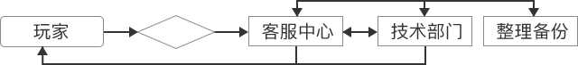
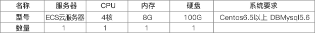
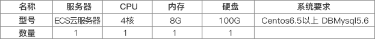
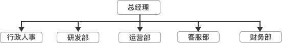
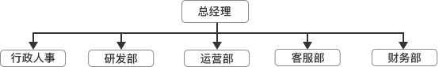

公司发展战略及开展网络文化工作的主要策略和具体措施
浙江歪米网络科技有限公司拥有专业经验丰富的、执行能力强的管理团队。每个员工都拥有高度的责任心，做事认真负责，注重产品创新。团结、创新、高效的理念也逐渐成为我们企业的理念，深入到每一个员工的内心深处。在众多的游戏公司中，如何生存，如何发展都是我们管理团队关注的问题，在行业的竞争中，我们意识到：只有不断的创新，完善的服务才能赢得行业的口碑，赢得玩家的信任与尊重，所以我们会在产品和服务上下苦工，俗话说“细节决定成败”，对于大公司更是如此，便捷的退换流程、快速的问题响应、精致的画面、服务器的正常运营，方方面面我们都要加强，做到客户100%满意就是我们的目标，我们前进的方向与动力。
（1）服务策略：
这里的服务，简单来讲，主要指客户服务。客户服务是帮助玩家解决问题，同样也是拉近玩家距离的最有效手段，需要注意以下三点：
1.客服人员的选择与要求：客服人员在前期维持5名。公司的主要负责人在前期也需要担任客服人员，以便对玩家的需求和情况有第一线资料，从而能够更好的针对玩家的需求，升级产品。良好的客户服务会使玩家有舒适的心情，从而能够更好地留住客户。
2.客服服务流程图：

3. 快速响应的重要:游戏问答是玩家和运营商沟通的直接方式。对于玩家的在线提问，需作出最快的回答；如不能及时回答，在查询过相关材料后，24小时内一定要解答。回答问题需要讲究一定技巧。并且要用专业、统一的标准化语言，这些都要不断的培训客服人员。
（2）技术支持:
游戏服务器架构：
一台ECS云服务器，一台RDS数据库 
一台ECS云服务器，一台RDS数据库 
（3）管理
1 、人员构成情况


2 、部门概述：
行政人事部：办公设备采购、人员考勤等行政工作；人员招聘、培训、绩效管理、社保管理、协调员工关系等人事管理工作。
运营部：主要负责公司产品策划、测试、市场推广、媒介宣传、项目运营、商务合作等相关工作。
研发部：涵盖技术研发、美术设计，网站建设等工作内容。
客服部：负责为玩家解答疑问，虚拟货币退换等工作。
财务部：公司财务支出、成本核算、发放工资等工作内容。
行政人事部：办公设备采购、人员考勤等行政工作；人员招聘、培训、绩效管理、社保管理、协调员工关系等人事管理工作。
运营部：主要负责公司产品策划、测试、市场推广、媒介宣传、项目运营、商务合作等相关工作。
研发部：涵盖技术研发、美术设计，网站建设等工作内容。
客服部：负责为玩家解答疑问，虚拟货币退换等工作。
财务部：公司财务支出、成本核算、发放工资等工作内容。
3、骨干人员及履历：
对于游戏运营公司来说，人力资源是核心。强大的研发团队保证一款好的游戏产品，原则性强的管理团队保障公司健康运转，运营团队创造物超所值的价值，实现游戏利润最大化。大型企业运营依靠的是制度和资金的规模管理，而小公司运营更多是凭借团队能力。所以，找到志同道合，德才兼备的人员组建优秀的团队是十分不容易的，所以重视人才的理念也是我们企业的理念之一，我们会定期开展专业知识培训，员工礼仪培训，关注员工的成长感，归属感。
现本公司员工数量是：20人，公司骨干人员共10人，包含了公司在财务管理、产品运营、网络技术、游戏运营方面的骨干力量。骨干团队曾经长期共事，拥有长期的行业从业经验，在长期的合作中，我们的骨干团队在技术研发、经营计划、执行、控制能力等各方面都积累了系统的经验。这为我们企业的发展奠定了良好的技术、市场基础。有了团队的力量，相信借着社会发展的东风，我们会乘风破浪，勇往直前。
对于游戏运营公司来说，人力资源是核心。强大的研发团队保证一款好的游戏产品，原则性强的管理团队保障公司健康运转，运营团队创造物超所值的价值，实现游戏利润最大化。大型企业运营依靠的是制度和资金的规模管理，而小公司运营更多是凭借团队能力。所以，找到志同道合，德才兼备的人员组建优秀的团队是十分不容易的，所以重视人才的理念也是我们企业的理念之一，我们会定期开展专业知识培训，员工礼仪培训，关注员工的成长感，归属感。
现本公司员工数量是：20人，公司骨干人员共10人，包含了公司在财务管理、产品运营、网络技术、游戏运营方面的骨干力量。骨干团队曾经长期共事，拥有长期的行业从业经验，在长期的合作中，我们的骨干团队在技术研发、经营计划、执行、控制能力等各方面都积累了系统的经验。这为我们企业的发展奠定了良好的技术、市场基础。有了团队的力量，相信借着社会发展的东风，我们会乘风破浪，勇往直前。
（4）经营管理技术措施
一.用户信息安全管理制度
浙江歪米网络科技有限公司平台采用严格的用户注册流程，全面的用户信息登记功能，设定记录基础密码、和用户邮箱等信息，包括用户私人信息和身份证信息，全面保障用户的登记信息完整有效。
浙江歪米网络科技有限公司平台对用户所提供的实名身份信息进行严格的管理及保护，并将使用现有的技术，尽力防止用户的个人资料丢失、被盗用或遭篡改。
浙江歪米网络科技有限公司平台未经用户授权不公开、修改、透露用户身份信息资料及其它保密性内容(特殊 原因除外）。
浙江歪米网络科技有限公司平台采用严格的用户注册流程，全面的用户信息登记功能，设定记录基础密码、和用户邮箱等信息，包括用户私人信息和身份证信息，全面保障用户的登记信息完整有效。
浙江歪米网络科技有限公司平台对用户所提供的实名身份信息进行严格的管理及保护，并将使用现有的技术，尽力防止用户的个人资料丢失、被盗用或遭篡改。
浙江歪米网络科技有限公司平台未经用户授权不公开、修改、透露用户身份信息资料及其它保密性内容(特殊 原因除外）。
二.网站安全保障措施
1、站服务器和其他计算机之间设臵经公安部认证的防火墙, 并与专业网络安全公司合作，做好安全策略,拒绝外来的恶意攻击，保障网站正常运行。
2、在网站的服务器及工作站上均安装了正版的防病毒软件，对计算机病毒、有害电子邮件有整套的防范措施，防止有害信息对网站系统的干扰和破坏。
3、做好生产日志的留存。网站具有保存60天以上的系统运行日志和用户使用日志记录功能，内容包括IP地址及使用情况，主页维护者、邮箱使用者和对应的IP地址情况等。
4、交互式栏目具备有IP地址、身份登记和识别确认功能，对没有合法手续和不具备条件的电子公告服务立即关闭。
5、网站信息服务系统建立双机热备份机制，一旦主系统遇到故障或受到攻击导致不能正常运行，保证备用系统能及时替换主系统提供服务。
6、关闭网站系统中暂不使用的服务功能,及相关端口,并及时用补丁修复系统漏洞,定期查杀病毒。
7、服务器平时处于锁定状态,并保管好登录密码;后台管理界面设臵超级用户名及密码,并绑定IP,以防他人登入。
8、网站提供集中式权限管理，针对不同的应用系统、终端、操作人员，由网站系统管理员设臵共享数据库信息的访问权限，并设臵相应的密码及口令。不同的操作人员设定不同的用户名，且定期更换，严禁操作人员泄漏自己的口令。对操作人员的权限严格按照岗位职责设定，并由网站系统管理员定期检查操作人员权限。
9、公司机房按照电信机房标准建设，内有必备的独立UPS不间断电源、高灵敏度的烟雾探测系统和消防系统，定期进行电力、防火、防潮、防磁和防鼠检查。
1、站服务器和其他计算机之间设臵经公安部认证的防火墙, 并与专业网络安全公司合作，做好安全策略,拒绝外来的恶意攻击，保障网站正常运行。
2、在网站的服务器及工作站上均安装了正版的防病毒软件，对计算机病毒、有害电子邮件有整套的防范措施，防止有害信息对网站系统的干扰和破坏。
3、做好生产日志的留存。网站具有保存60天以上的系统运行日志和用户使用日志记录功能，内容包括IP地址及使用情况，主页维护者、邮箱使用者和对应的IP地址情况等。
4、交互式栏目具备有IP地址、身份登记和识别确认功能，对没有合法手续和不具备条件的电子公告服务立即关闭。
5、网站信息服务系统建立双机热备份机制，一旦主系统遇到故障或受到攻击导致不能正常运行，保证备用系统能及时替换主系统提供服务。
6、关闭网站系统中暂不使用的服务功能,及相关端口,并及时用补丁修复系统漏洞,定期查杀病毒。
7、服务器平时处于锁定状态,并保管好登录密码;后台管理界面设臵超级用户名及密码,并绑定IP,以防他人登入。
8、网站提供集中式权限管理，针对不同的应用系统、终端、操作人员，由网站系统管理员设臵共享数据库信息的访问权限，并设臵相应的密码及口令。不同的操作人员设定不同的用户名，且定期更换，严禁操作人员泄漏自己的口令。对操作人员的权限严格按照岗位职责设定，并由网站系统管理员定期检查操作人员权限。
9、公司机房按照电信机房标准建设，内有必备的独立UPS不间断电源、高灵敏度的烟雾探测系统和消防系统，定期进行电力、防火、防潮、防磁和防鼠检查。
三.信息安全保密管理制度
1、为防止病毒造成严重后果，对外来光盘、软件要严格管理，原则上不允许外来光盘、软件在本所局域网计算机上使用。确因工作需要使用的，事先必须进行防（杀）毒处理，证实无病毒感染后，方可使用。
2、接入网络的计算机严禁将计算机设定为网络共享，严禁将机内文件设定为网络共享文件。
3、为防止黑客攻击和网络病毒的侵袭，接入网络的计算机一律安装杀毒软件，并要定时对杀毒软件进行升级。
4、禁止将材料存放在网络硬盘上。
5、禁止将涉密办公计算机擅自联接国际互联网。
6、保密级别在秘密以下的材料可通过电子信箱传递和报送，严禁保密级别在秘密以上的材料通过电子信箱、QQ等网上传递和报送。
7、涉密计算机严禁直接或间接连接国际互联网和其他公共信息网络，必须实行物理隔离。
8、要坚持“谁上网，谁负责”的原则，各部门要有一名领导负责此项工作，信息上网必须经过所领导严格审查，并经主管领导批准。
9、国际互联网必须与涉密计算机系统实行物理隔离。
10、在与国际互联网相连的信息设备上不得存储、处理和传输任何涉密信息。
11、应加强对上网人员的保密意识教育，提高上网人员保密观念，增强防范意识，自觉执行保密规定。
12、涉密人员在其它场所上国际互联网时，要提高保密意识，不得在聊天室、电子公告系统、网络新闻上发布、谈论和传播国家秘密信息。使用电子函件进行网上信息交流，应当遵守国家保密规定，不得利用电子函件传递、转发或抄送国家秘密信息。
1、为防止病毒造成严重后果，对外来光盘、软件要严格管理，原则上不允许外来光盘、软件在本所局域网计算机上使用。确因工作需要使用的，事先必须进行防（杀）毒处理，证实无病毒感染后，方可使用。
2、接入网络的计算机严禁将计算机设定为网络共享，严禁将机内文件设定为网络共享文件。
3、为防止黑客攻击和网络病毒的侵袭，接入网络的计算机一律安装杀毒软件，并要定时对杀毒软件进行升级。
4、禁止将材料存放在网络硬盘上。
5、禁止将涉密办公计算机擅自联接国际互联网。
6、保密级别在秘密以下的材料可通过电子信箱传递和报送，严禁保密级别在秘密以上的材料通过电子信箱、QQ等网上传递和报送。
7、涉密计算机严禁直接或间接连接国际互联网和其他公共信息网络，必须实行物理隔离。
8、要坚持“谁上网，谁负责”的原则，各部门要有一名领导负责此项工作，信息上网必须经过所领导严格审查，并经主管领导批准。
9、国际互联网必须与涉密计算机系统实行物理隔离。
10、在与国际互联网相连的信息设备上不得存储、处理和传输任何涉密信息。
11、应加强对上网人员的保密意识教育，提高上网人员保密观念，增强防范意识，自觉执行保密规定。
12、涉密人员在其它场所上国际互联网时，要提高保密意识，不得在聊天室、电子公告系统、网络新闻上发布、谈论和传播国家秘密信息。使用电子函件进行网上信息交流，应当遵守国家保密规定，不得利用电子函件传递、转发或抄送国家秘密信息。